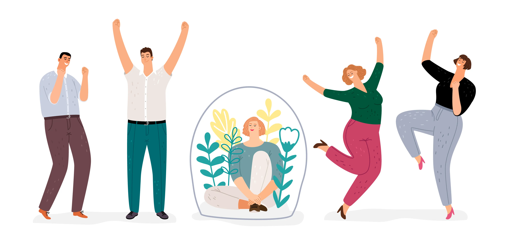

Signs You’re an Introvert

Do you prefer the company of your cats and a good book to a boisterous party any day? If you do, you might be an introvert . Take pride in this status — it can often mean you experience the world on a deeper, more sensitive level than many. Contrary to superstition, introverts don’t dislike the company of others. However, too much exposure to other people can overwhelm these sensitive souls. They typically need to rest after social events, and they prefer spending time alone regularly. If you’re wondering if you may fall into the introverted tribe, consider the following signs.
You Seek Pets First at Social Gatherings
When you arrive at a social event, do you flit about the room like a butterfly, making small talk with various people? If you’re more of an introvert, you’re not necessarily the person standing alone in the corner. However, you’re usually not the one making the rounds, either. You’re likely engrossed in a deep conversation with one or two like-minded folks or playing with your host’s pets.
Animals and introverts often share a special bond. Why? Many introverts do feel considerable anxiety when they need to attend social functions. Multiple research studies indicate spending time with pets alleviates stress and even depression. Seeking out a kitty or canine companion is a healthy way for the shy set to ease their way through gatherings.
You Enjoy Alone Time
Introverts enjoy being alone for several reasons. Many introverts need time at the end of each day to release and process their emotions from dealing with others.
Alone time equates to freedom for many introverts. When introverts are in a crowd, or even with one or two others, they often feel pressured to act in ways that feel unnatural to them. Going too long without the liberty to be yourself can actually lead to physical and mental health disorders.
Introverts who work in fields that require dealing with others can sometimes develop frequent headaches and other chronic pain conditions. One reason may be due to introverts and extroverts reacting to dopamine, a crucial neurotransmitter, in different ways. According to Dr. Marti Olsen Laney, author of The Introvert Advantage, while extroverts feel stimulated by higher dopamine levels spurred by interactions with others, introverts feel overwhelmed by the flood of this chemical.
You Tend Toward Wanting a Little Lubrication for Small Talk
Unfortunately, if you’re an introvert, your intolerance of small talk may lead to unhealthy decisions, too. Many introverts have undiagnosed social anxiety disorders and even experience physical symptoms like nausea and lightheadedness in social situations. In an attempt to mask their fear of embarrassment, they may turn to alcohol to take off the edge.
The negative long-term effects of this, though, far outweigh the short-term “positive” feelings that can come from drinking. If you drink to excess in social situations, you might feel guilt or remorse afterward. Continuing to use alcohol to manage everyday encounters can cause your work and family life to suffer. If you’re worried you might be too dependent on alcohol or another substance to ease your anxieties, seek treatment.
Networking Feels Phony
The quiet set realizes that much success in life stems from positive relationships with others. However, the “I’ll scratch your back if you scratch mine” appeal of networking can leave them feeling hollow and fake. Does this doom you to the lower rungs of the career ladder?
Nope — your mindfulness as an introvert can actually make networking easier to bear. Try changing the way you think about networking events. Remember that everyone at the meeting likely feels the same way you do inside. They’re just better at hiding the emotion. Instead of focusing on what you can derive from networking events, concentrate on how you can help others with your skillset. When introverts can tap into this skill, they are often able to develop high emotional intelligence , which is an important trait in workplace leaders.
You Screen Your Phone Calls
Do those memes about “why couldn’t you send a text” speak volumes to you? If you screen your phone calls to weed out more than just telemarketers, you might be an introvert. For many in the shy set, talking on the phone holds all the charm of idle cocktail party chit chat — minus the visual cues on how to act. Thus, it can provoke significant anxiety, and many introverts prefer to communicate via text or chat as a result.
Large Crowds Drain You
Many introverts are also empaths, meaning they physically feel the emotions of others. Think about how hard it is to manage your feelings when you’re depressed or anxious. Then, imagine picking up on similar sensations from others. Is it any wonder people sensitive to others’ emotional energies feel drained by crowds?
Cherish your empathy if you are an introvert. The ability to step into the shoes of somebody else is a commodity sorely lacking in society today. Instead of lamenting how the sorrows of others drain you, direct that energy toward helping those in need. Make sure to take time for self-care, too — you need to fill yourself up before you can serve others.
You Actually Feel Lonelier When You’re With Others
Few people embody the sentiment of feeling more alone in a crowd than in the middle of nowhere like introverts do. Because you don’t see the need to make conversation merely to fill airtime, partaking in banter about the latest reality TV show can leave you feeling isolated. Everyone else seems to enjoy the chitchat — why don’t you?
Take comfort in knowing that it’s natural to feel lonely, even when others surround you. It doesn’t mean that you’re defective. It often means you’d rather seek to better understand people by discussing more weighty matters. There’s nothing wrong with that.
You Get Testy Before and After Social Events
When it’s the night before the annual office Christmas party, you might snap at your spouse. Perhaps your child tells you they need help with their algebra again, and you throw up your hands. If you’re an introvert, the mere anticipation of social events can make your mood turn sour. Plus, when you return, you feel drained. Any additional demands on you to interact with others feel like mucking the Augean stables.
If you only feel testy before or after social events, your introverted nature is the likely culprit. However, if you find yourself unusually irritable on a continual basis , talk to your doctor. Some health conditions impact your mood and behavior.
You Embrace Technology
How did people live without computers? If you ask yourself this question regularly, you might be an introvert. While many extroverts would find sitting in a room solo staring at lines of code intolerable, you take to the task. You’ve never met a new software you couldn’t master in a few hours, and you can’t imagine a world where ordering a pizza meant not clicking an app, but — gasp — making a live phone call.
You Find Written Communication More Natural
Many people dream of the writer’s life, but as an introvert, you’re uniquely suited to the task. Because you process your thoughts by internalizing them, you don’t allow outside influences to distract you from the task at hand. You also possess keen observational skills, allowing you to pick up on cues and behavioral patterns others overlook.
Living Off-Grid Holds Mega-Charm
If you’re a diehard introvert, the idea of living life unplugged from the hustle and bustle of city life probably holds tons of charm. Plus, given your insight, you’re probably concerned about matters like climate change more than most. You adore the idea of practicing sound environmental stewardship by growing a garden from dried produce seeds and composted scraps.
Your Circle Is Small But Tight
Just because you’re an introvert doesn’t mean you don’t enjoy friendship. Indeed, while you may keep your circle small, the people you allow in are your bosom buddies for life. You know you can count on them in a pinch, and you’d do anything to help those you love. Besides, surrounding yourself with a choice group of positive people creates a more beneficial influence than the din of a rancorous crowd. It’s OK to be selective in who you allow into your life.
Embrace Your Glorious Introverted Self
If you recognize yourself in the above characteristics, congratulations! You may be an introvert, and that’s a great thing. The key to growing with your introversion is embracing your sensitivity and depth and reveling in your marvelous independence.
Source: https://activebeat.com/your-health/signs-youre-an-introvert/